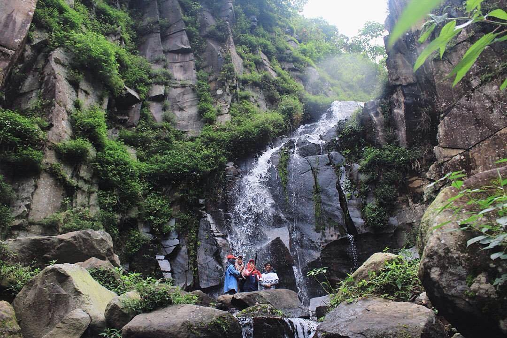
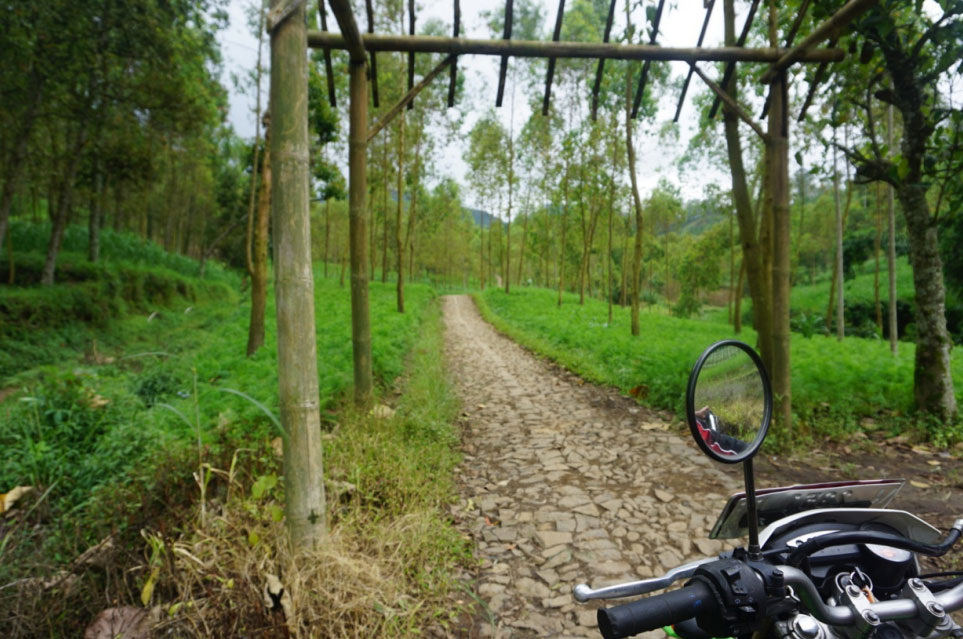
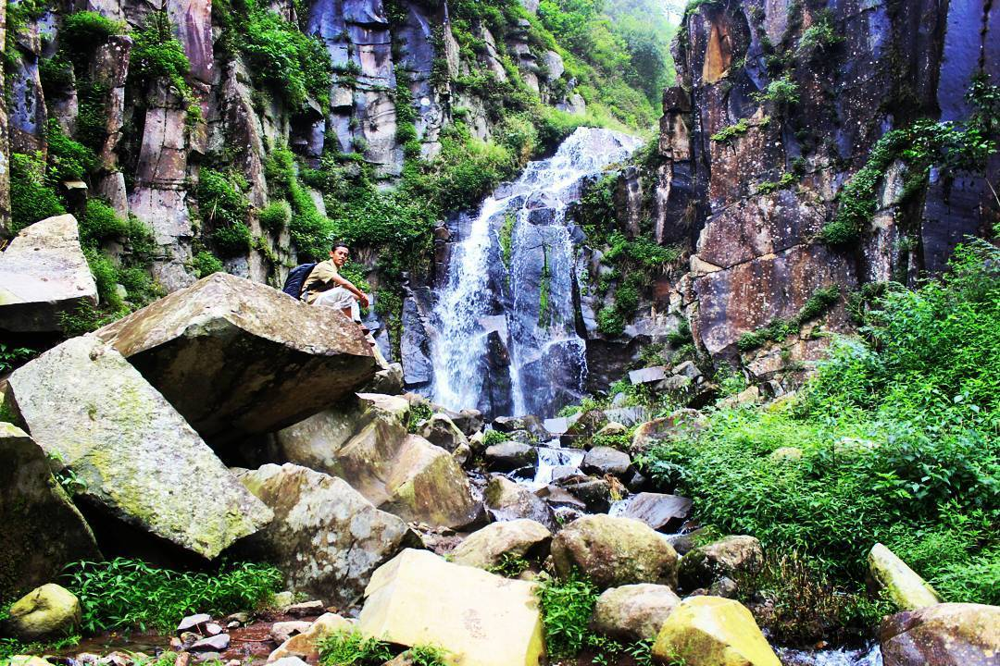
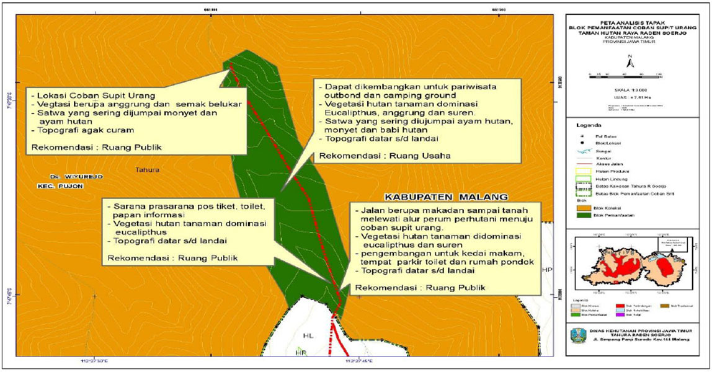

Tahukah kalian bahwa Air Terjun Supit Urang Merupakan air yang tidak tinggi tapi mempunyai keunikan dengan ketinggian ± 20 m, terletak di kawasan Tahura Raden Soerjo, yang secara administratif berada di Desa Madiredo Kec. Pujon, Kabupaten Malang dengan letak astronomis pada posisi 7° 47’ 26,25” – 7° 47’ 44,56” LS dan 112° 27’ 37,26” – 112° 27’ 44,33” BT. Air terjun ini merupakan hulu sungai Sumber Watu Bonakah, memiliki panorama alam indah berada di Gunung Jurung Guah dengan ketinggian 1.693 mdpl dan luas area ini sebesar 7,61 Ha.

Teman-teman yang akan berkunjung kesini bisa lewat jalan raya Batu – Kandangan. Dari jalan Utama menuju desa/kampung terakhir persil sidomulyo sangat bagus sekitar 3 Km. Dari batas kampung sampai dengan batas perhutani jalannya datar dari batuan makadam sajauh 0,3 Km. Perjalanan yang teman-teman tempuh dari batas Perhutani sampai Pos Jaga Air Terjun Supit Urang sejauh 1,8 KM, untuk sampai menuju Pos Jaga Air Terjun Supit Urang sampai dengan saat masih bisa menggunakan sepeda motor,

Di sepanjang jalan menuju air terjun, sejauh 100 m bisa untuk dibuat spot selfie. Dari rencana spot selfi kurang lebih 100 m ada bumi perkemahan seluas 1 Ha lengkap dengan MCK. Kondisi sekarang tidak terurus dengan sedikit pengunjung.. Coban Sriti dapat terlihat saat perjalanan menuju air terjun Supit Urang. Kondisi jalan tanah yang licin perlu dibuat pengerasan jalan dengan batu/makadam dari pos jaga sampai dengan Air Terjun. Panorama air terjun Supit urang dikelilingi oleh batuan alam yang sangat menakjubkan. Terdapat dua lagi air terjun di atas air terjun Supit Urang, yaitu Air Terjun Watu Talang dan Air Terjun Undak.
Di wilayah ini terdapat hutan tanaman hasil reboisasi gerhan tahun 2003 sehingga tanamannya didominasi pohon jenis pasang (Litocarpus sundaicus) dan kukrup (Engelhardia spicata), jenis lainnya yaitu tutup (Macaranga gigantea), anggrung (Trema orientalis), suren (Tona Suren), eucalipthus, pakis (Cycas rumphii). Satwa yang sering dijumpai yaitu kijang (Muntiacus muntjak), rusa timor (Cervus timorensis), ayam hutan (Galus sp) dan monyet ekor panjang (Macaca fascicularis).
